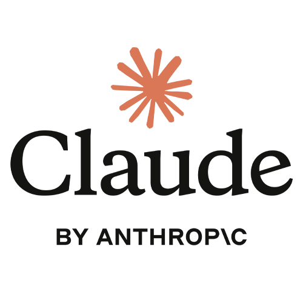

騰訊混元開源草稿模型 DFly2
騰訊混元團隊開源新一代草稿模型 DFly2，專為加速 Hy4 flash 的推論而設計。在 AgentLongBench 評測上，DFly2 最高可帶來 4.2 倍的吐字提速，平均提速約 3.2 倍。值得注意的是，它並不替換 Hy4 flash 本身，模型的權重與輸出結果完全不變，屬於純粹的加速外掛。騰訊同步開源了 DFly2 的權重與完整訓練代碼，開發者可自行復現與改進。這種「不動主模型、只加速推論」的思路，讓既有部署無痛獲得數倍速度提升。